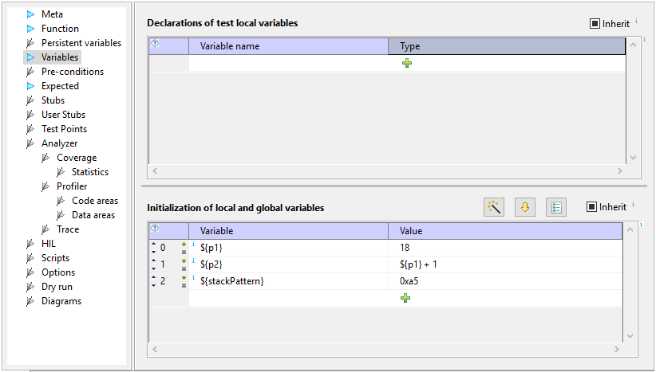

Host variables
Host variables are stored on host (PC). They can be treated like
macros, which are replaced with their values in expressions,
before they are given to evaluator. They can be used to store
information between tests, and to provide better configurability
of tests. They are also used by test creation wizard and can be
used in exports.
Definition
Host variables can only be defined in section Variables. They do
not have type - values are always treated as strings. They can not
be declared table Declarations of test local variables in
section Variables, but can have value assigned in
table Initialization of local and global variables.
Name of
host variable must always start with ${ and end
with }:
${<varName>}
for example:
${myVar}
Example of section Variables with host variables p1,
p2, and stackPattern defined:

Assignments to host variables are possible only in Variables section.
Stub and test-point steps can assign values only to target variables
(but may use host variables as R-values).
Assignments can not be done to reserved host vars.
Where can we use host variables?
Host variables can be used in places, where values are expected:
- function parameters
- values in section Variables
- script function parameters, except scripts in test filters and target init
sequence
- pre-condition expressions
- expressions in section Expected
- values for assignments in steps of sections Stubs and Test points
- stack usage limits
- HIL values
- Option values
- names of files in analyzer section - document and export file
names
- log expressions - test case and stubs/test-points logging
Host variables can not be used where identifiers and types are
expected.
Coverage and profiler statistic values currently do not support
host vars.
Note: Sections Pre-conditions, Options, and
scriptf function Init Target are executed before
assignments in Variables section. If you want to use
host variables in these sections, assign them in
test case which executes before this test case!
Scope
Host variables set in one test case, are available to all derived test cases,
and test cases with the same parent and on the same hierarchy
level. For example, host vars defined in test case test-16
(selected on image below), are visible in all derived tests
(test-17, test-18, and test-19), and tests having the same parent
and following test-16: test-20, test-21, test-22, and test-23.
Character types
Character types are always evaluated as decimal value, unles other
format specifier is given.
Paths as script parameters
If host variable contains '\' characters, for example file paths on Windows,
then use Python prefix 'r', when passing host variable as a paramter to
script extension function, for example:
r'${_iyamlDir}'
Strings
To assign literal string to host variable we can use quotes:
${mode} "Velocity"
The value stored in ${mode} is Velocity - string
without quotes. To use it in assignment to string, we must add quotes, for
example:
Otherwise the value is used as identifier name.
Complex types
Host variables always store values as strings, which means that
their usage is limited in case of complex types like structures
and arrays. For example, if we have structure:
struct struct_t {
char m_c;
int m_i;
float m_f;
double m_d;
char m_ac[7];
};
then value stored in host variable is the same as string printed
in winIDEA watch window:
'(\\x00 (0x00),0x00000000,0.0,0.0,"")'
This string can not be used in expressions, but it can be used for logging.
Reserved host variables
Host variables, which names start with underscore character '_',
are reserved for internal testIDEA usage.
Predefined host variables
testIDEA automatically defines the following host variables:
${_rv} - if function returns non-void type, this host variable
contains function return value. If it contains primitive
type (char, int, ...) it can be used in expressions.
${_env_} - all environment variables
are accessible with prefix _env_. These variables can be
used to pass paths for analyzer files, for example:
Context specific host variables
There exist also additional context specific host variables, for
example for diagram output and analyzer file names. They
are proposed by content proposal and described in descriptions of
content proposals - select proposal (but do not close proposals
list) and wait for a second or two until description appears.